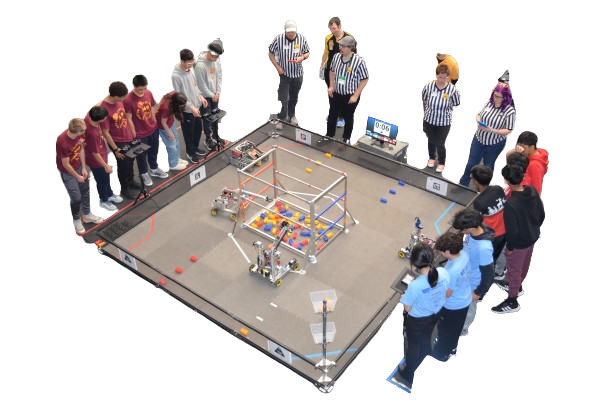

ABOUT US
The Oakton Robotics Club was founded in 2001 by Mr. Scholla, and over the course of 2 decades, the robotics club thrived and transformed a competitive club with a diverse group of over 70 students. Originally the Oakton Rocketry, Jets, and Robotics clubs, Robotics remained the strongest of the 3, and as such became the spearhead of STEM clubs at Oakton High School. As a club, we pride ourselves on our competitive drive, along with ensuring that our students have the tools to succeed no matter what they do. Supported by our sponsors, parent board, mentor program, and hardworking students, the Oakton Robotics Club cements itself as one of the strongest extracurricular programs that Oakton has to offer.
Oakton High School Cougar Robotics strives to educate and inspire our team members and community in all aspects of STEM learning. We pride ourselves in providing an opportunity for youth to pursue STEM related fields of study and careers. Our club's foundation is firmly built on interpersonal relationships between students, mentors, sponsorships, and our community. Finally, we strive to make a positive impact on our local community and the world. Though we are a robotics team, one of our focuses is people. It has been proven with time that communication, collaboration, and diversity allows us to triumph and overcome obstacles, and strive to create a space in which everyone is able to share their ideas. Different perspectives allow us to work to our highest potential. While we are a competitive team, we also value gracious professionalism throughout the season, especially during competitions.
Cougar Robotics is organized into 4 major categories: FRC, FTC, Business, and R&D. Students newer to robotics generally start on one of our FTC teams, or opt to join our growing Business team and R&D, team while the more experienced students focus on the FRC team. The Business Team works year round, assisting both FTC teams during the “winter” season and the FRC during the “spring” season. Similar to other clubs, we have a Board made up of students and adults. The composition of the Board includes the President, Treasurer, Secretary, Alumnus, and the Advisor. All adults are automatically included into the Board. Last but certainly not least, our mentors encourage teamwork and help to maintain a positive atmosphere. They help spark career interest and pursue STEM careers.
As a competitive robotics team, we strive to accept a variety of members that have a fierce passion for STEM. We acknowledge that teams with diverse skill sets and perspectives more effectively accomplish tasks. In order to attract potential recruits, the Cougar Robotics Team advertises itself at the local high school club fair. After filling out an interest form, students and parents are invited to an interest meeting where they learn about our team, our accomplishments, and acceptance criteria. Students who continue to express interest in the team then fill out an application form. Mentors and student leadership interview those students, asking about past STEM experience, their ability to work in teams, and give the applicant the opportunity to display their passion for the team they wish to join. Applicants have the opportunity to join our programming, build, business, or R&D team. The former will be placed into one of two FTC teams. Once they have sufficient experience, they may be placed in our FRC team. Students’ parents are encouraged to become mentors, fostering teamwork, helping to maintain a positive atmosphere, and sparking career interests with their own expertise and experiences in the field.
In Cougar Robotics, we pride ourselves in promoting gracious professionalism, student leadership, and STEM ideals for all. As our future in FIRST continues, we look to further expand into our community and provide an opportunity for students to learn what robotics has to offer. Each year, we make adjustments to make our teams run more fluidly and improve our process. This year, changes in structure were made for the Business Team to allow those documenting the engineering process to gather more detailed and accurate information. These adjustments strengthen our team as a whole and we will continue to make changes and improvements to Cougar Robotics.